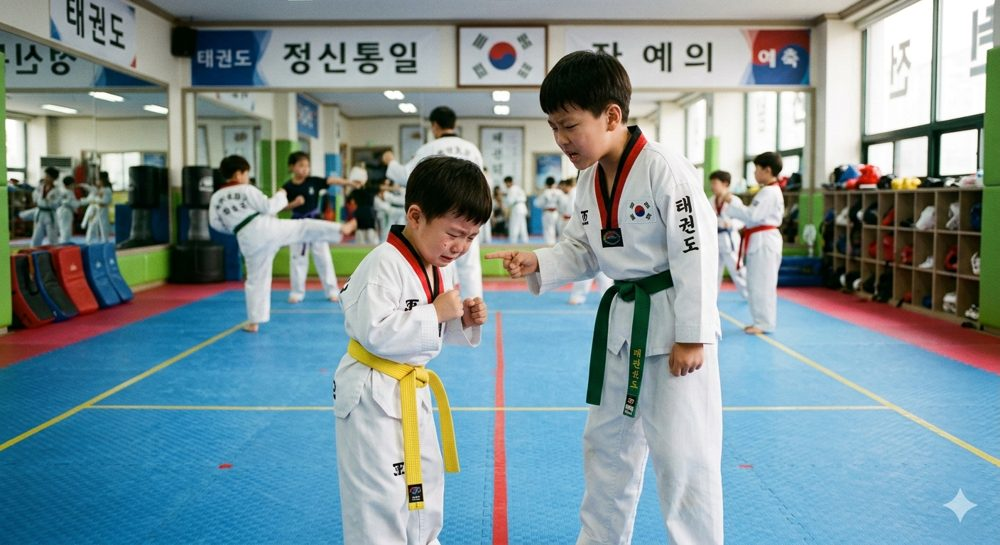
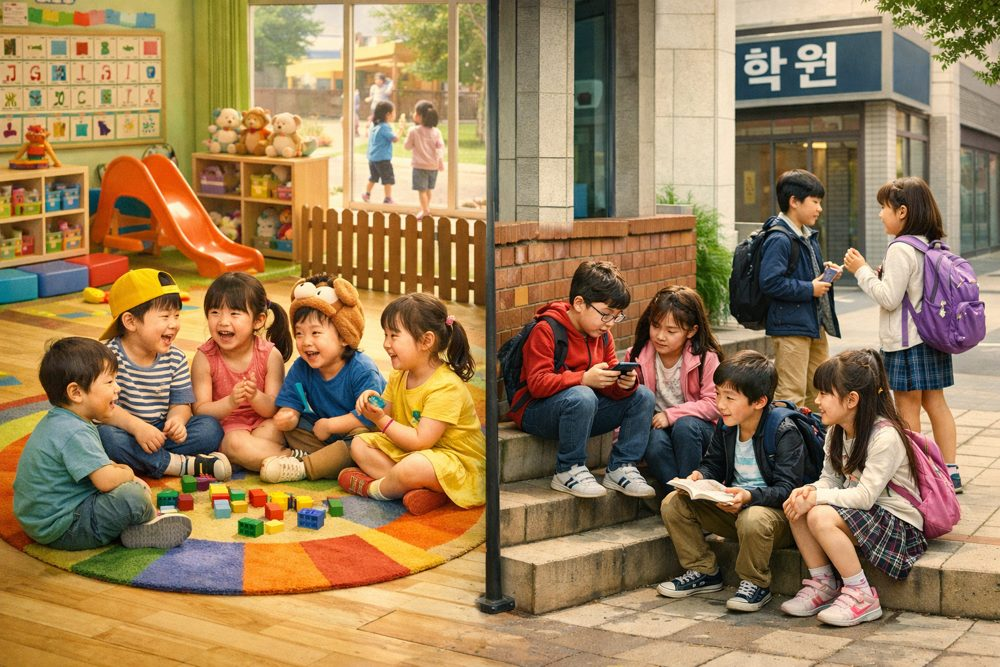
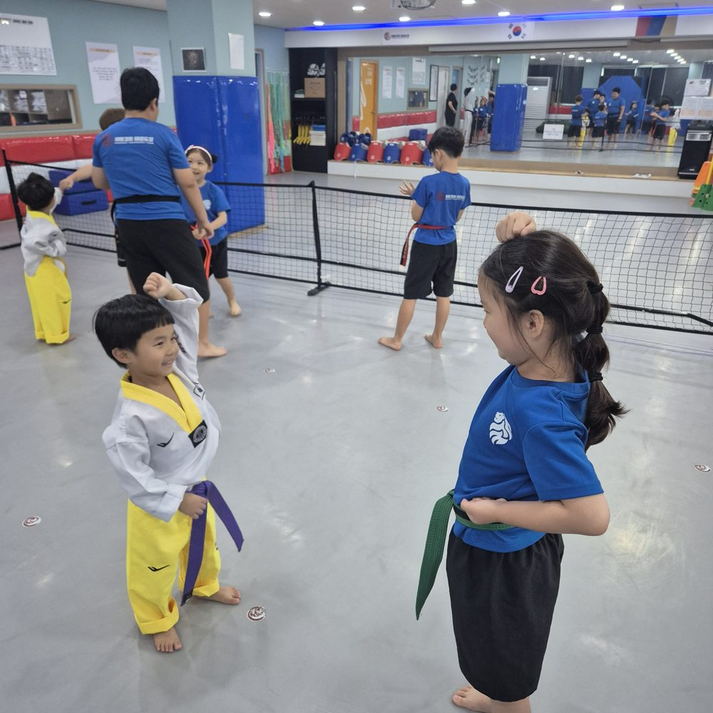
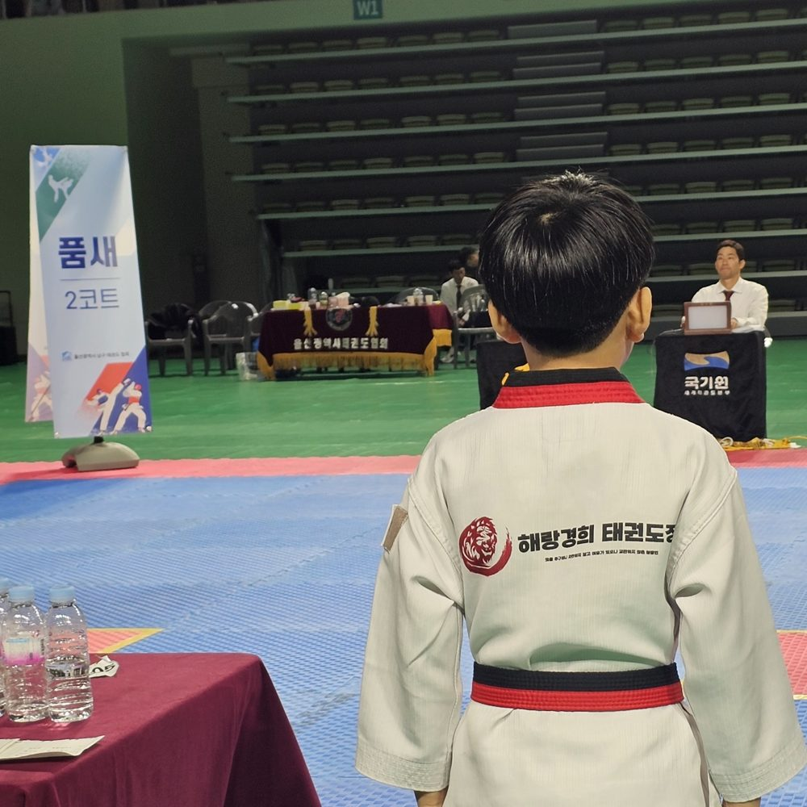

함께 수업
왜 해야할까요?
(feat. 혼합연령수업)

또래끼리 해야
안전하지 않을까요?

학부모로서 흔히 할 수 있는 걱정입니다.
하지만 또래끼리 생활해야지만
사회성이 향상될까요?
이미 ‘또래 친구들’과
지내고 있습니다.

어린이집, 유치원, 학교…
하루의 90%는 비슷한 연령대 안에서만
생활하고 있습니다.
지식은 쌓을 수 있지만
다양한 사람과 살아가는 법을
배울 기회는 턱없이 부족합니다.
비교가 아닌 존중을,
경쟁이 아닌 협력을
비교의 부담이 아닌, 함께 어우러지며
건강한 사회성의 기초를 만듭니다.

또래 생활 중심
- 평가받는 위치
- 비교와 순위
- 상위 소수만 남는 구조
혼합연령 생활 중심
- 함께 성장하는 즐거움
- 존중과 역할 분담
- 관계와 배려
지금이
‘관계의 골든 타임’
나이가 다른 사람과 어우러지는 법을 배우는
유일한 시간이 될 수 있습니다.
- 다채로운 사회적 공존
속도가 빠른 사람부터 섬세하게 움직이는 사람까지 다양한 결을 가진 사람들과 어우러지며 세상에 대한 시야가 넓어지는 귀한 기회입니다.
- 자연스럽게 생겨나는 리더십과 팔로우십
누군가를 이끌어주며 자신감의 유능함을 발견하고, 선배들을 보며 미래의 성장을 긍정적으로 꿈꾸게 됩니다.
- 함께 성장하는 선순환
‘나눔의 기쁨’과 ‘배움의 즐거움’을 동시에 느끼며 리더십과 협동심이 어우러진 입체적 사회성이 완성됩니다.
이 환경에서 우리는
이렇게 성장합니다.
- 새로운 도전에 대한 심리적 문턱
- 실패 후 다시 일어서는 회복 탄력성
- 자연스러운 협력과 도움을 주고 받는 태도
- 스스로의 가능성에 대한 깊은 신뢰
세상을 배우는 ‘진짜’ 대인관계 훈련

혼합 연령 수업을 통해
평생 지녀야 할
사회성의 기초를
만들게 됩니다.